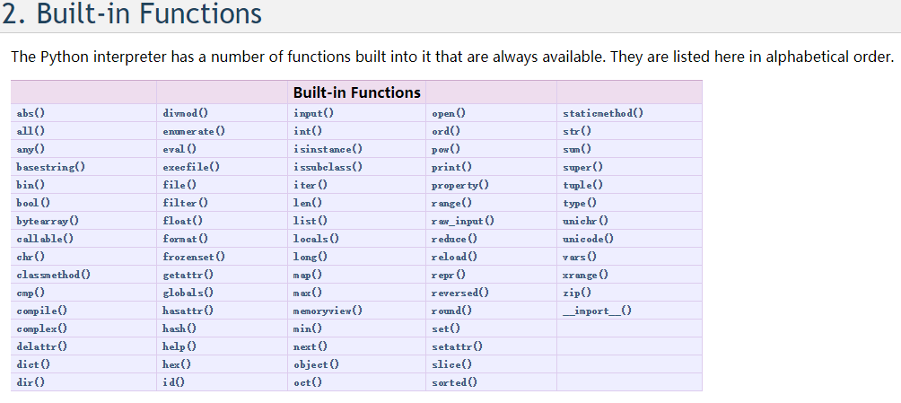

前言
最近参加的两场CTF线上赛都涉及到了Flask反序列化漏洞+Python沙箱逃逸，所以相结合HITB的Python Revenge题目总结一下Python的沙箱逃逸。
正文
沙箱逃逸,就是在给我们的一个代码执行环境下(Oj或使用socat生成的交互式终端等),脱离种种过滤和限制,最终成功拿到shell权限的过程
对于python的沙箱逃逸而言,我们来实现目的的最终想法有以下几个
- 使用os包中的popen,system两个函数来直接执行shell
- 使用commands模块中的方法
- 使用subprocess
- 使用写文件到指定位置,再使用其他辅助手段
总体来说,我们使用以下几个函数,就可以直接愉快的拿到shell啦!
1 | import os |
但是,可以确定的是,防御者是不会这么轻易的让我们直接拿到shell的,肯定会有各种过滤,对代码进行各种各样的检查,来阻止可能的进攻。比如
- 禁止引入敏感包
- 过滤__builtin__包中危险函数如eval()、execfile()、exec()等
- 将敏感包从
sys.modules中删掉
0x01 相关基础
- python input函数
Python3.x 中 input() 函数接受一个标准输入数据，返回为 string 类型。
Python2.x :
查看 Built-in Functions ，得知：
input([prompt]): Equivalent to eval(raw_input(prompt))
Consider using the raw_input() function for general input from users.
除非对 input() 有特别需要，否则一般情况下我们都是推荐使用 raw_input() 来与用户交互。
Python2.7中的__builtin__
名称空间：名称（标识符）到对象的映射
在一个正常的Python程序的执行过程中，至少存在两个名称空间：
- 内建名称空间
- 全局名称空间
如果定义了函数，则还会有局部名称空间，全局名称空间一般由在程序的全局变量和它们对应的映射对象组成，而局部名称空间则在函数内部由函数局部变量和它们对应的映射对象组成，这里关键的是内建名称空间，它到底是怎么产生的？参考文档是这样写的：
我们把这些函数称为内建函数，是因为它们不需要我们程序员作任何定义，在启动Python解释器的时候，就已经导入到内存当中供我们使用。
__import__
import 是一个关键字,因此,包的名字是直接以 ‘tag’(标记)的方式引入的,但是对于函数和包来说,引入的包的名字就是他们的参数,也就是说,将会以字符串的方式引入。
我们可以对原始关键字做出种种处理来bypass掉源码扫描
以__import__函数举例
1
2f3ck = __import__("pbzznaqf".decode('rot_13'))
print f3ck.getoutput('ifconfig')或者使用importlib 这一个库
1
2
3import importlib
f3ck = importlib.import_module("pbzznaqf".decode('rot_13')
print f3ck.getoutput('ifconfig')
0x02 题目分析
题目源码略长，这里仅贴出部分关键代码。题目使用了Flask框架，Web页面中有一个表单输入页面和显示我们输入内容的页面。
关键在于页面存储我们输入内容的方式：
1 | location = request.form["reminder"] |
所以数据使用pickle存储在cookie中，不过还存在一个不可知的cookie_secret，对应的反序列化的代码
1 | def loads(strs): |
反序列化的内容用户可控，就可以利用pickle反序列化自动执行__reduce__函数来进行RCE，相关原理网上已经有很多了，我自己之前也简单的分析过，浅析python unpickle反序列化漏洞
可以看到，上面的loads反序列化函数中调用了_hook_call，而_hook_call函数中进行了大规模的过滤 :)
1 | black_type_list = [eval, execfile, compile, open, file, os.system, os.popen, os.popen2, os.popen3, os.popen4, os.fdopen, os.tmpfile, os.fchmod, os.fchown, os.open, os.openpty, os.read, os.pipe, os.chdir, os.fchdir, os.chroot, os.chmod, os.chown, os.link, os.lchown, os.listdir, os.lstat, os.mkfifo, os.mknod, os.access, os.mkdir, os.makedirs, os.readlink, os.remove, os.removedirs, os.rename, os.renames, os.rmdir, os.tempnam, os.tmpnam, os.unlink, os.walk, os.execl, os.execle, os.execlp, os.execv, os.execve, os.dup, os.dup2, os.execvp, os.execvpe, os.fork, os.forkpty, os.kill, os.spawnl, os.spawnle, os.spawnlp, os.spawnlpe, os.spawnv, os.spawnve, os.spawnvp, os.spawnvpe, pickle.load, pickle.loads, cPickle.load, cPickle.loads, subprocess.call, subprocess.check_call, subprocess.check_output, subprocess.Popen, commands.getstatusoutput, commands.getoutput, commands.getstatus, glob.glob, linecache.getline, shutil.copyfileobj, shutil.copyfile, shutil.copy, shutil.copy2, shutil.move, shutil.make_archive, dircache.listdir, dircache.opendir, io.open, popen2.popen2, popen2.popen3, popen2.popen4, timeit.timeit, timeit.repeat, sys.call_tracing, code.interact, code.compile_command, codeop.compile_command, pty.spawn, posixfile.open, posixfile.fileopen] |
另外，loads函数在getlocation()函数中被调用，而函数会首先进行cookie_secret的校验，通过之后才会执行loads函数。
1 | def getlocation(): |
因此攻击过程中存在两个难点
- cookie_secret不可知
- python的黑名单绕过
0x03 尝试攻击
首先解决第一个问题
1 | if not os.path.exists('.secret'): |
发现cookie_secret是写入.secret文件中，并且只写入一次！于是我们可以随便抓一个包取其中的cookie然后逆向分析就可以得到cookie_secret
1 | def break_cookie(): |
得到cookie_secret: hitb
接下来，解决python的沙盒逃逸问题，首先我们要找出一个可以执行命令的函数，这里过滤很很多，但是仔细想想，可以观察到注意到这段代码的一个重要事情 - 它是Python 2，并且在黑名单中没有input（）函数。关于这个函数，python 2和3之间有很大的区别。在python 3中，它的行为与python 2中的raw_input（）相同 ,它只是从stdin读取输入。但在python 2中它所做的实际上是eval（raw_input（）），所以通过使用input（）我们可以做eval（）。input函数在__builtin__ moudle中，于是有：
1 | c__builtin__ |
现在我们需要实际发送一些数据给函数，但是它从stdin读取数据。幸运的是python允许几乎所有的东西都可以修补，所以我们可以简单地将一些对象分配给sys.stdin，执行setattr（sys，'stdin'，something_else），我们可以从__builtin__中获取setattr。但是获取sys模块对象，就需要导入它。这时可以调用__import__ （’sys’）[函数__import__在__builtin__中]。于是可以写出
1 | c__builtin__ |
相当于__builtin__.setattr(__builtin__.__import__('sys'),'stdin',SOMETHING_ELSE)
接下来就要填充SOMETHING_ELSE了，我们可以使用StringIO类，一个可以直接在内存中进行读写的类
1 | cStringIO |
于是得到
1 | c__builtin__ |
相当于
1 | __builtin__.setattr(__builtin__.__import__('sys'),sysin,cStringIO.StringIO('evil_conmand')) |
最后的攻击脚本如下
1 | #coding:UTF-8 |
可以输入__import__(‘os’).listdir(“/“)、__import__(‘os’).system(“ls”) 、__import__(‘subprocess’).check_output(“ls”)等进行测试，可以发现根目录下存在flag_is_here,执行open(“/flag_is_here”,”r”).read()，得到：HITB{Py5h0n1st8eBe3tNOW}
参考